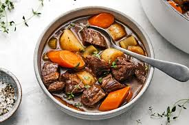

Krusty Beef Stew

Description
A homemade beef stew recipe for the stovetop. This traditional stew is good eaten from a bowl or poured over biscuits. The longer this simmers, the better! Vary the herbs to your taste.
Ingredients
- 3 tablespoons vegetable oil
- 2 pounds cubed beef stew meat
- 4 cubes beef bouillon, crumbled
- 4 cups water
- 1 teaspoon dried rosemary
- 1 teaspoon dried parsley
- ½ teaspoon ground black pepper
- 3 large potatoes, peeled and cubed
- 4 carrots, cut into 1 inch pieces
- 4 stalks celery, cut into 1 inch pieces
- 1 large onion, chopped
- 2 teaspoons cornstarch
- 2 teaspoons cold water
Steps